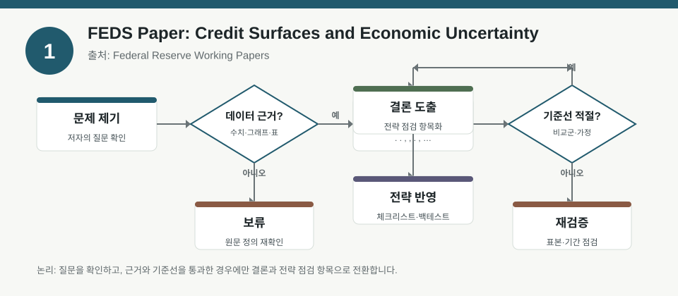
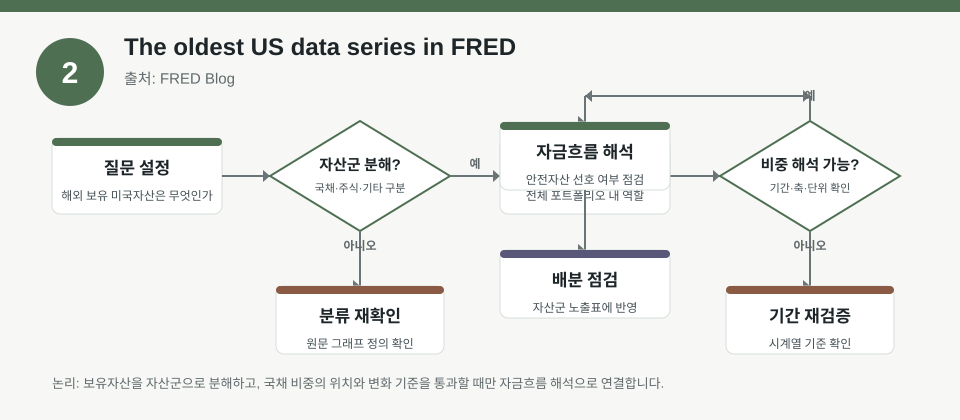
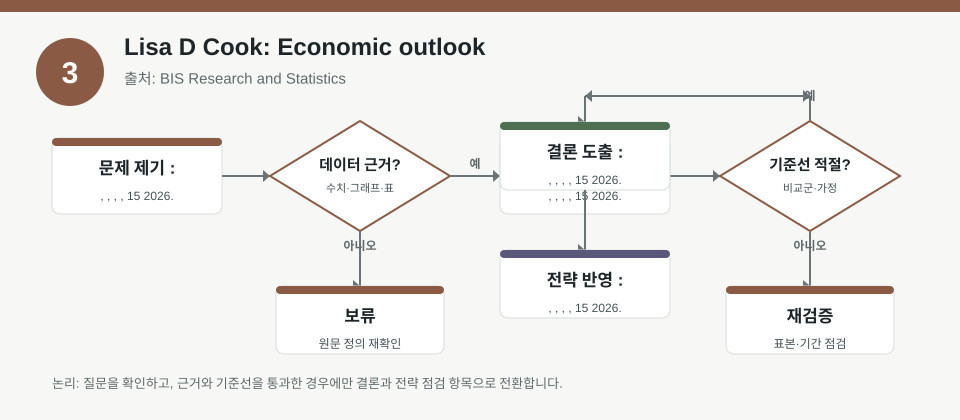

핵심 요약
- 결론: 세 자료 모두 금리·불확실성·데이터 해석의 중요성을 강조하며, 한국 투자자는 KOSPI/KOSDAQ 업종 민감도와 FX·신용 스프레드를 함께 점검하는 프레임이 유용합니다.
- 원칙: 아래 내용은 제공된 메타데이터만 바탕으로 정리했으며, 수치가 없는 시장 주장과 원문 세부 통계는 반드시 원문에서 재검증해야 합니다.
주목할 자료
| 번호 | 자료 | 출처 | 원문 | 핵심 내용 | 데이터 포인트 | 리스크/한계 |
|---|---|---|---|---|---|---|
| 1 | Credit Surfaces and Economic Uncertainty | Federal Reserve Working Papers | 원문 보기 | 불확실성 충격이 신용스프레드를 키우고 레버리지 구간별 신용공급 곡선을 가팔라지게 만든다는 점을 다룹니다. | factor: 불확실성·레버리지 민감도, risk: 신용스프레드 확대, portfolio: 크레딧 조건 변화 점검 | 통계 식별, 표본 구간, 추정 가정은 원문 확인 필요 |
| 2 | The oldest US data series in FRED | FRED Blog | 원문 보기 | FRED의 장기 시계열 사례를 통해 데이터의 역사성과 비교 가능성을 소개합니다. | backtest: 장기 시계열 선택 편향, risk: 구조변화·불연속성, factor: 장기 팩터 검증 | 어떤 시계열이 비교 가능한지, 결측·개정 이력은 원문 확인 필요 |
| 3 | Lisa D Cook: Economic outlook | BIS Research and Statistics | 원문 보기 | 경제전망 연설로, 거시 여건과 정책 해석을 통해 향후 경기·금리·리스크를 읽는 관점을 제공합니다. | macro: 성장·인플레이션·정책경로, risk: 정책 불확실성, portfolio: 듀레이션·섹터 민감도 | 연설 시점과 현재 시점 차이, 발언의 정량 근거는 원문 확인 필요 |
자료별 상세
1. Credit Surfaces and Economic Uncertainty

- 핵심: 불확실성이 커질수록 신용스프레드가 확대되고, 레버리지 비율에 따른 차입 비용 곡선이 더 가파르게 변할 수 있다는 점이 핵심입니다.
- 데이터 포인트: factor는 불확실성 충격, risk는 신용스프레드와 대출가능성, portfolio는 크레딧 노출과 재융자 여건 점검입니다.
- 리스크: 레버리지 구간별 효과가 어떤 표본과 모형에서 나왔는지, 그리고 인과 해석이 얼마나 강한지는 원문에서 확인해야 합니다.
- 투자전략 반영 예시: 한국 투자자는 KOSPI 금융·산업재·중소형주처럼 자금조달 민감 업종의 신용환경 변화 체크리스트를 따로 둘 수 있습니다.
- 실행 예시: 실적 시즌 전후로 회사채 스프레드, 차입 만기 구조, 환율 민감 매출 비중을 함께 점검하는 표를 만들어 두면 좋습니다.
2. The oldest US data series in FRED

- 핵심: 매우 긴 시계열은 경기 국면 비교에 유용하지만, 데이터의 연속성과 정의 일관성이 함께 검증돼야 한다는 점을 보여줍니다.
- 데이터 포인트: backtest는 장기 샘플의 구조변화, risk는 시계열 개정과 정의 변경, factor는 팩터 프리미엄의 기간 의존성입니다.
- 리스크: 오래된 데이터일수록 표본의 경제 구조가 다를 수 있어, 과거 성과를 현재 시장에 그대로 적용하면 왜곡될 수 있습니다.
- 투자전략 반영 예시: 한국 투자자는 장기 백테스트에서 KOSPI/KOSDAQ 업종 분류 변경, 상장폐지, 거래제도 변화가 포함됐는지 점검하는 습관이 필요합니다.
- 실행 예시: 백테스트 결과를 볼 때 누적수익만 보지 말고, 시작 연도별·위기 국면별로 나눠 같은 팩터가 유지되는지 확인하는 체크리스트를 쓰면 좋습니다.
3. Lisa D Cook: Economic outlook

- 핵심: 경제전망 자료는 성장, 인플레이션, 정책금리 경로를 함께 읽어야 하며, 자산시장은 이 세 변수의 조합에 반응한다는 점이 중요합니다.
- 데이터 포인트: macro는 성장·물가·고용 흐름, risk는 정책 경로의 불확실성, portfolio는 듀레이션과 경기민감 업종의 민감도입니다.
- 리스크: 연설은 해설적 성격이 강해 정량 예측치가 제한적일 수 있으므로, 수치 주장보다 메시지의 방향성과 조건을 확인해야 합니다.
- 투자전략 반영 예시: 한국 투자자는 미국 정책 기대 변화가 KOSPI 대형주, 원/달러 환율, 반도체·수출주 변동성에 미치는 경로를 별도 점검할 수 있습니다.
- 실행 예시: 물가 서프라이즈, 고용 서프라이즈, 금리 기대 변화가 나타날 때마다 섹터별 민감도 메모를 업데이트하는 방식이 유효합니다.
팩터·리스크·포트폴리오 관점
- 핵심: 세 자료를 묶어 보면 불확실성은 신용조건을, 데이터는 백테스트 신뢰도를, 거시전망은 금리·환율·섹터 민감도를 좌우하는 축으로 읽을 수 있습니다.
- 검수: 팩터 노출은 표본 기간과 정의에 따라 달라질 수 있고, 원문에 없는 수치와 추정치는 사실로 단정하지 말고 검증 항목으로 남겨야 합니다.
정리
- 결론: 한국 투자자 관점에서는 신용환경, 장기 데이터 품질, 거시정책 경로를 함께 보는 다중 점검이 핵심입니다.
- 다음 확인: 각 원문에서 표본 기간, 변수 정의, 추정 방법, 시점별 비교 가능성을 먼저 확인하는 것이 필요합니다.